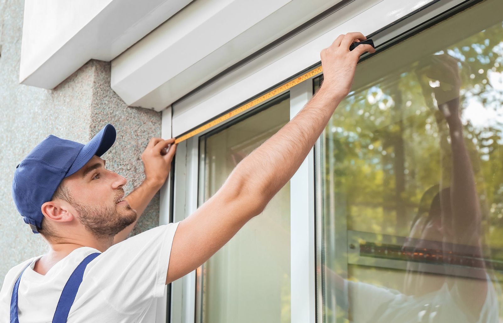
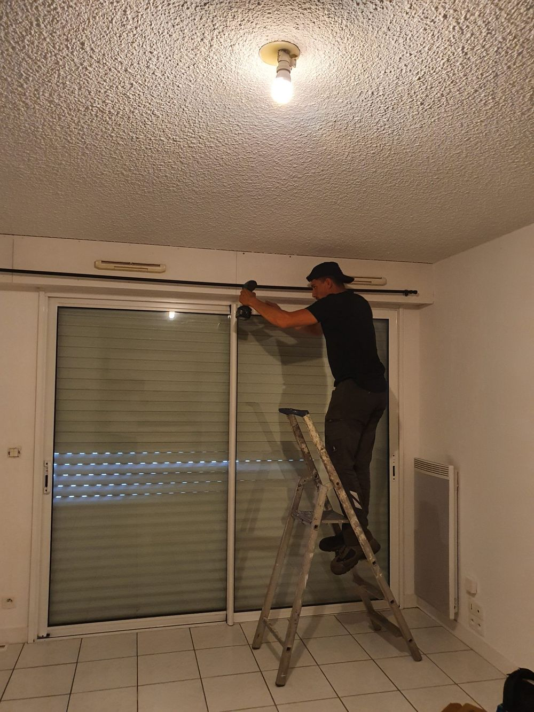
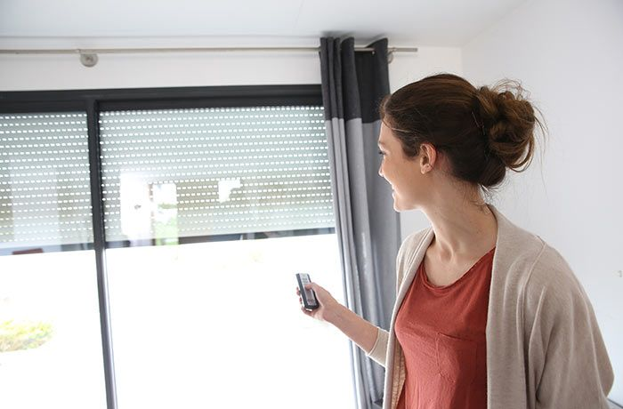
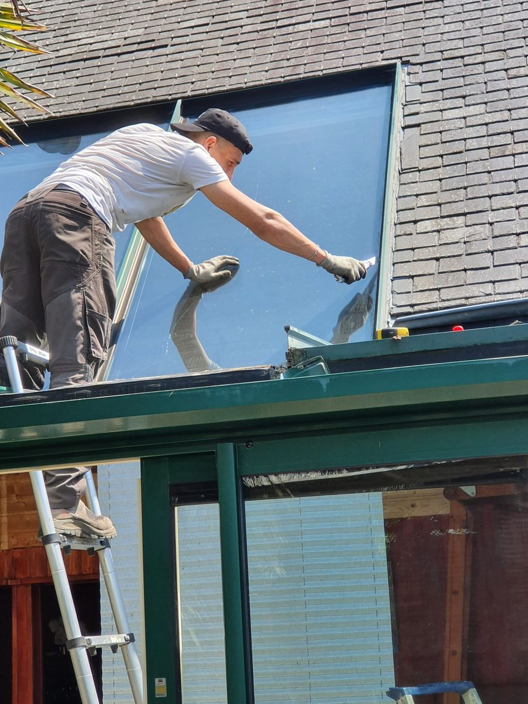
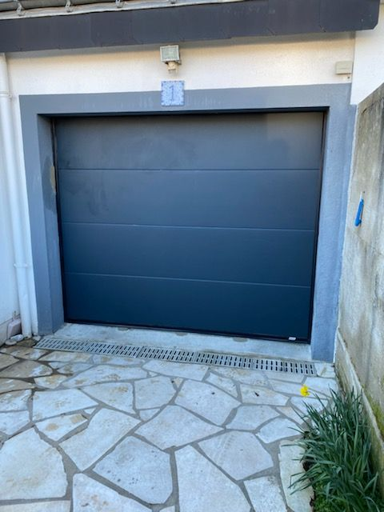
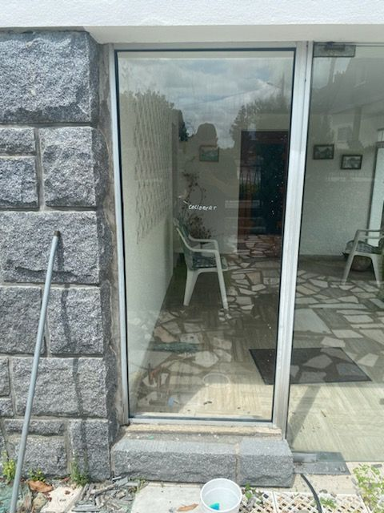
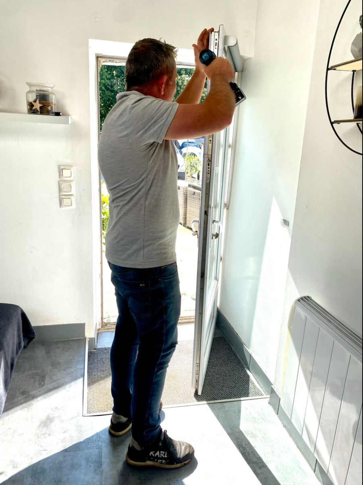
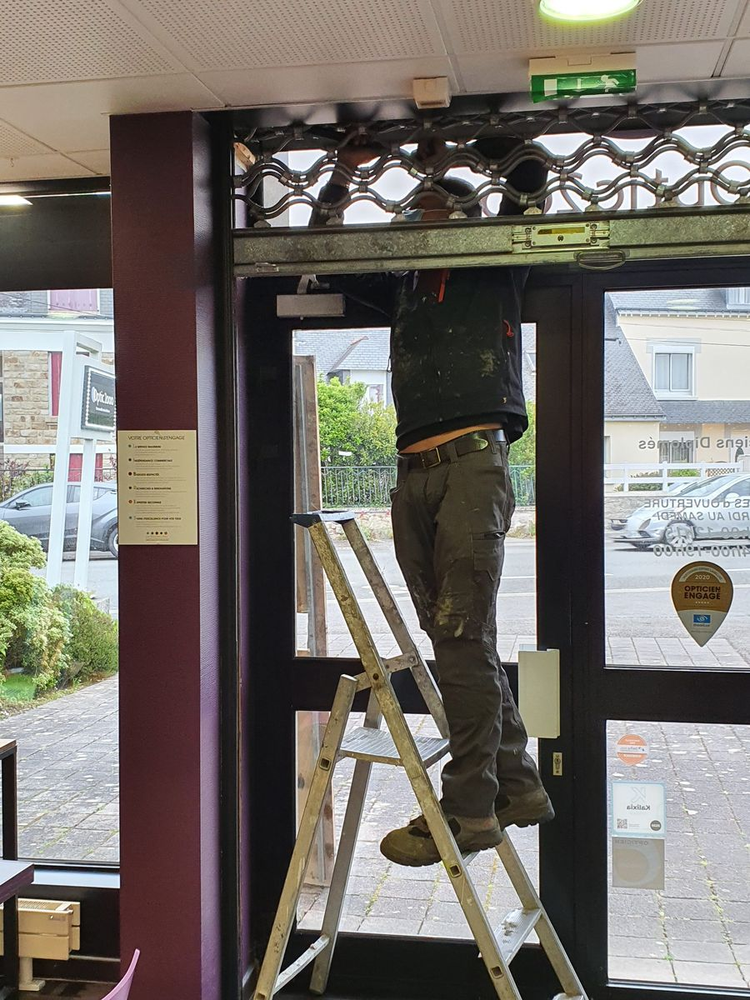
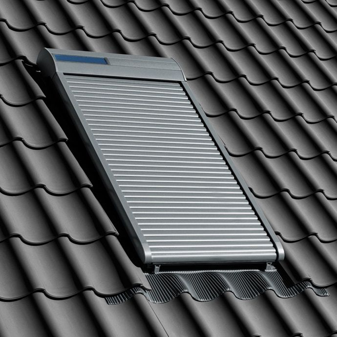

Volets roulants sur mesure, posés par un artisan breton.
Rénovation, solaire ou traditionnel : configurez votre volet en ligne, nous venons prendre les cotes et nous le posons. Fabrication française, garantie décennale.


Fabricants et marques que nous posons
- QUALIFERM
- SOMFY
- SIMU
- BUBENDORFF
- VELUX
- ECKERMANN by ZF
Des volets roulants fabriqués en France, au millimètre.
Six solutions pour équiper une fenêtre neuve, remplacer un ancien volet ou simplement changer un tablier ou un axe. Choisissez un modèle pour lancer le configurateur.

Un geste suffit.
Motorisé, programmé ou piloté depuis votre téléphone : on choisit avec vous le moteur adapté à la taille du volet et à votre usage.
- Isolation thermique et phoniqueLames double paroi PVC ou alu injecté de mousse polyuréthane.
- Sécurité renforcéeVerrous anti-relevage, lames alu renforcées, serrure en option.
- Maison connectéeMoteurs radio compatibles TaHoma, horloge et simulation de présence.
Nos chantiers, nos équipes.
Volets roulants, vitrages, portes et menuiseries : quelques interventions récentes de Breizh Innovation chez des particuliers et des commerçants du Morbihan.





De la configuration à la pose, sans surprise.
Aucun paiement en ligne : vous ne validez qu'après avoir reçu notre devis détaillé, établi sur des cotes vérifiées chez vous.
Vous configurez
Modèle, dimensions, lames, coloris et motorisation, directement en ligne.
On vous rappelle
Un technicien relit votre demande et vous envoie un devis sous 48 h.
Métré sur place
Nous contrôlons chaque cote chez vous avant de lancer la fabrication.
Pose et réglages
Pose propre, réglage des fins de course et prise en main de la télécommande.
Les grandes marques, posées et réglées par nos soins.
Filaire, radio, connecté ou solaire. Manivelle de secours possible en cas de coupure de courant.
RS100 io silencieux, Solar io autonome, pilotage depuis la box TaHoma.
Garantie 5 à 7 ansMoteurs filaires et radio BHz compatibles io, fiables et éprouvés.
Garantie 5 ansFilaire ou radio compatible RTS, excellent rapport qualité-prix.
Garantie 5 ans
Pas de prise ? Pas de problème.
Le volet solaire se recharge à la lumière du jour, même par temps couvert. Idéal en rénovation et sur les fenêtres de toit.
- Aucun raccordement électrique ni saignée
- Moteur Somfy Solar io garanti 7 ans
- Télécommande fournie, pose en une demi-journée
Morbihan et sud Finistère.
Notre atelier est à Quéven. Nous intervenons chez les particuliers et les professionnels du Pays de Lorient, de Vannes et de Quimper.
Votre devis en 3 minutes.
Gratuit, sans engagement, sans paiement en ligne. Métré sur place offert.
Tout ce qu'on nous demande.
Une autre question ? Appelez-nous au 07 49 69 57 15.
Dois-je payer en ligne pour commander ?
Non. Le configurateur nous transmet votre demande. Nous vous rappelons, vérifions les cotes sur place puis vous envoyons un devis définitif. Le règlement se fait directement avec nous, une fois le devis accepté.
Comment prendre les mesures de ma fenêtre ?
Indiquez des cotes approximatives en millimètres : largeur et hauteur de la fenêtre ou de l'ancien volet. Un technicien passe toujours vérifier les dimensions avant la fabrication.
Volet rénovation ou traditionnel, quelle différence ?
Le volet rénovation a un coffre visible posé à l'extérieur, sur la fenêtre existante : idéal pour remplacer d'anciens volets sans travaux. Le volet traditionnel s'intègre dans un coffre existant (bois ou maçonnerie), le plus souvent en construction neuve.
Le volet solaire fonctionne-t-il en Bretagne ?
Oui. La batterie offre une grande autonomie même par faible ensoleillement : le panneau a seulement besoin de lumière du jour, pas de plein soleil.
Quels sont les délais ?
Comptez en général 2 à 4 semaines entre la validation du devis et la pose, selon le modèle et la saison. Les tabliers et axes seuls sont souvent plus rapides.
Réparez-vous les volets existants ?
Oui, Breizh Innovation dépanne et répare les volets roulants toutes marques, y compris les volets de fenêtres de toit : moteur, axe, lames ou tablier complet.
Parlons de votre projet.
Une question avant de configurer ? Appelez-nous ou laissez un message, nous répondons rapidement.